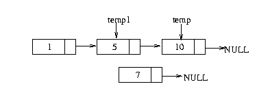
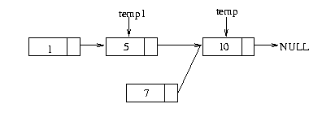
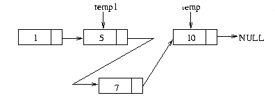

Adding elements in the middle of a list
Well, if you managed till here I must really applaud your
patience. This section might be a bit tough, but I will try and keep
it as simple as I can.
As usual we start off by looking at some code. This time the program
actually does some useful work it is an insertion sort program. The
algorithm for insertion sort is really very simple. Our program
receives numbers one after another. We compare this number with the
numbers we have in a list and insert it in an appropriate
position. Though I must say this is not a very good sorting
algorithm, performance wise. The code can be downloaded here.
0 #include<stdio.h>
1 //this macro calculates the size of the array for us
2 //for eg if you pass it 10 element array. In Linux
3 //sizeof(array) will be 40 bytes since 1 int in Linux is 4 bytes
4 //Therefore size of array will be 40/4 =10 elements
5 #define NELEM(array) (sizeof(array)/sizeof(int))
6 struct node{
7 int n;
8 struct node *next;
9 };
10 typedef struct node node;
11
12 node *Insert(node *first,int number){
13 node *new_node=(node *)malloc(sizeof(node));
14 node *temp=first;
15 node *temp1=first;
16
17 new_node->n=number;
18 new_node->next=NULL;
19
20 if(first==NULL){
21 first=new_node;
22 return first;
23 }
24
25 for(;temp!=NULL;temp=temp->next){
26 if(temp->n>number){
27 for(;temp1->next!=temp;temp1=temp1->next);
28 break;
29 }
30 }
31
32 if(temp==first){
33 new_node->next=first;
34 first=new_node;
35 return first;
36 }
37
38 if(temp==NULL){
39 for(;temp1->next!=temp;temp1=temp1->next);
40 temp1->next=new_node;
41 return first;
42 }
43
44 //insert element in the middle
45 new_node->next=temp;
46 temp1->next=new_node;
47 return first;
48 }
49
50 //the insertion sort function takes the first node pointer and
51 //also the list of numbers to be sorted
52 node *InsertionSort(node *first,int list[],int n){
53 int i=0;
54
55 for(i=0;i<n;i++){
56 first=Insert(first,list[i]);
57 }
58 return first;
59 }
60
61 void printList(node *first){
62 node *temp=first;
63 printf("List Contents:\n");
64 while(temp!=NULL){
65 printf("%d\n",temp->n);
66 temp=temp->next;
67 }
68 }
69
70 int main(){
71 node *first=NULL;
72 int a[]={1,453,345,356,3,65,6,4645,4};
73 first=InsertionSort(first,a,NELEM(a));
74 printList(first);
75 }
Phew! That was some bit of code. But never fear when Reuben is
near. We will take that apart part by part. If you do notice this
program has made use of both the concept's I've explained till
now. That is inserting elements in the beginning and inserting
elements at the end.
The main function
76 int main(){
77 node *first=NULL;
78 int a[]={1,453,345,356,3,65,6,4645,4};
79 first=InsertionSort(first,a,NELEM(a));
80 printList(first);
81 }
This is simple all we do here is create a pointer to hold the list,
then create an array to be sorted. Line 3 calls the sort
function, and ofcourse you should know what Line 4 does by now.
The InsertionSort function
The work of this function is simple it just goes through the array
calling the insert function which inserts the element in the right
position.
The Insert function
82 node *new_node=(node *)malloc(sizeof(node));
83 node *temp=first;
84 node *temp1=first;
85
86 new_node->n=number;
87 new_node->next=NULL;
Now we have the juicy part. This is the function where all the action
happens. Let us start off by looking at the variables used.
At line 0 as usual we create a new node for the list and in line 4 and
5 the assignment of the same happens. In line 1 we have the temp
variable which is used to traverse the list. In line 2 we have the
temp1 variable that is used to traverse the list once we have
traversed the list. I'll explain that statement in a while.
88 if(first==NULL){
89 first=new_node;
90 return first;
91 }
92
The section of code above checks to see weather the element inserted
is the first one or not. If it is the first one then the first pointer
is made to point to it and the first pointer is returned.
93 for(;temp!=NULL;temp=temp->next){
94 if(temp->n>number){
95 for(;temp1->next!=temp;temp1=temp1->next);
96 break;
97 }
98 }
If we escape the above "if" construct unscathed we land in to this
weird looking for loop. This is a more compact way of traversing the
list. Since we already assigned temp to first in the begining of the
function we don't need to do it again. The condition for the loop is
that temp must not become NULL, and next part of the loop is the
actual traversal.
In the above code segment's if construct we check whether the number
stored in the node greater than the number entered. If that is the
case the we use the temp1 variable to traverse the list and stop in
the node before temp. Thats what I meant when I said temp1 is used
traverse the list once we have traversed the list.
Pictorially it can be shown as follows.

99 if(temp==first){
100 new_node->next=first;
101 first=new_node;
102 return first;
103 }
104
This section of code gets control when the while loop breaks. If it
happens that the temp points to the first node. The new node is
inserted at the begining of this list.
105 if(temp==NULL){
106 for(;temp1->next!=temp;temp1=temp1->next);
107 temp1->next=new_node;
108 return first;
109 }
The code above should be obvious. If temp is pointing to NULL that
means that we are at the end of the list. Therefore, we insert the new
node at the end of the list.
110 new_node->next=temp;
111 temp1->next=new_node;
112 return first;
This is the intresting part. Here we insert the node in the middle of
the list. We make new_node point to temp. Once this is done we make
temp1's next pointer point to new_node. This is shown in the diagrams
below.


I think that all there is to the program once you have mastered this
section and the previous section you should be able to write simple
programs that make use of link lists. In the next few sections I will
be concentrating on removing elements from a link list.